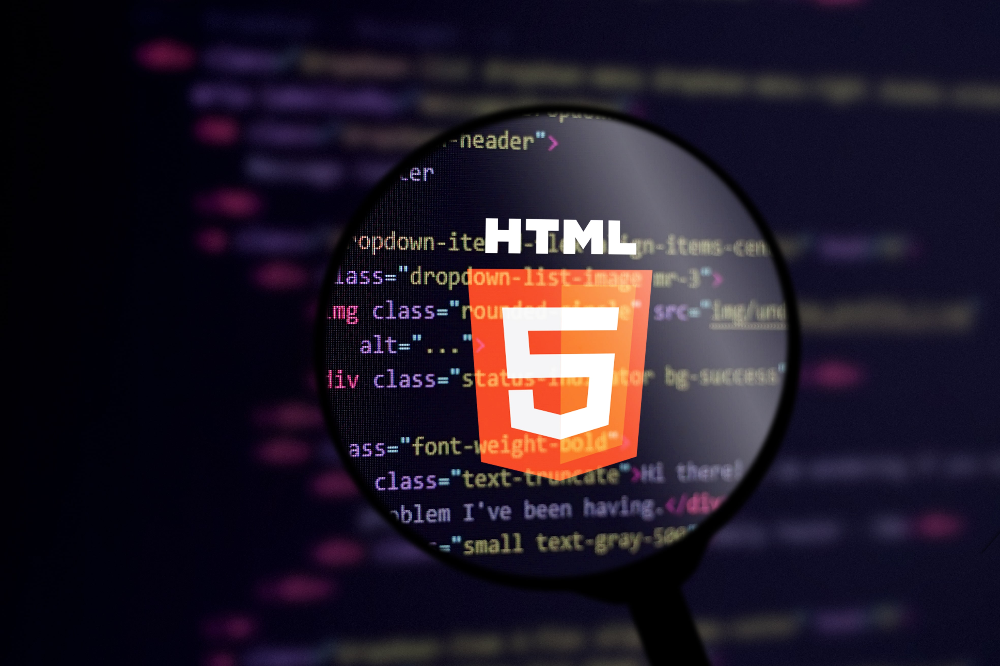

The Passion of Becoming a Front-End Developer
Embarking on a journey in the world of technology and coding is an endeavor filled with excitement and possibilities.
Hi, I'm Emil, and I want to share my passion for becoming a Front-End Developer and my orientation within the vast IT sphere.
Embracing the Digital Canvas
Front-End Development, often referred to as the "digital canvas," is where the magic happens on the web.
It's the art of crafting engaging and interactive user experiences that seamlessly blend aesthetics and functionality.
The ability to turn a static design into a dynamic interface fascinated me from the start.
Bringing Ideas to Life
What drove me to pursue Front-End Development was the power it gives to transform ideas into reality.
The code becomes a language through which I can give life to designs and concepts. This fusion of creativity and technology
is like no other, and it's what makes every line of code written so rewarding.
Continuous Learning in a Dynamic Field
The IT field is ever-evolving, and that's a thrill for someone passionate about growth.
From mastering the latest frameworks to adapting to new design principles, being a Front-End Developer
means committing to a journey of continuous learning. And I'm up for the challenge.
Collaboration and Innovation
While Front-End Development might seem like a solitary endeavor, it's far from it. Collaboration
is at the core of building great digital experiences. Working alongside designers, Back-End Developers, and
other IT professionals is not only enriching but also sparks innovation through diverse perspectives.
Adapting to User-Centric Experiences
In today's digital landscape, user experience is paramount. Front-End Developers play a pivotal role in creating
intuitive and user-friendly interfaces. This involves understanding user behavior, incorporating accessibility, and
ensuring that every interaction is meaningful.
Orientation in the IT Sphere
While my passion lies in Front-End Development, navigating the broader IT sphere is essential. Understanding
how different components of technology interact empowers me to make informed decisions, whether it's optimizing website
performance or ensuring cross-device compatibility.
Final Thoughts
Choosing to become a Front-End Developer is not just about writing code; it's a commitment to innovation, creativity, and
the ever-evolving world of technology. As I continue on this journey, I'm excited to contribute to building remarkable
digital experiences that leave a lasting impact.